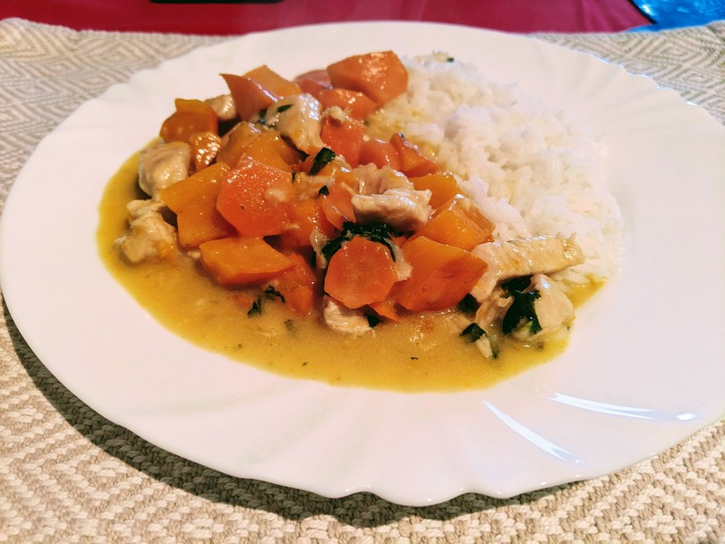

Mezi staršími recepty tu na blogu můžete najít recept na jedno docela podobné “vege” kari, pokud se ale řadíte mezi masožravce nebo máte zkrátka jen chuť na změnu, toto je velice jednoduchý a rychlý recept, který zaručeně nezklame. Inspirace z Albert magazínu :-)
- 320g rýže basmati
- 200g kuřecích prsou
- 2 lžičky bramborového škrobu
- 1/4 dýně Hokkaidó
- 2 mrkve
- 3 lžíce slunečnicového oleje
- 2 lžičky zelené curry pasty
- 2 stroužky česneku
- 3cm kousek zázvoru
- 15g másla
- 1 lžíce třtinového cukru
- 2 hrsti čerstvého koriandru
- 400ml kokosového mléka
- 1 lžíce rybí omáčky
- sůl
Rýži uvaříme dle návodu na obalu. Kuřecí maso si nakrájíme na nudličky, osolíme, zasypeme škrobem a promícháme. Omytou dýni nakrájíme na kostičky a mrkev na kolečka. V hluboké pánvi rozehřejeme olej na mírném ohni, přidáme curry pastu, rozmělněný česnek a najemno nakrájený zázvor. Za stálého míchání opékáme 1 minutu. Vsypeme maso, máslo a zvýšíme plamen. Zprudka opékáme 2 minuty. Přisypeme zeleninu, cukr a další 3 minuty opékáme. Nakonec přimícháme nasekaný koriandr a kokosové mléko a dochutíme rybí omáčkou. Zmírníme plamen a necháme probublávat 10 minut. Podáváme s rýží, posypané koriandrem.
